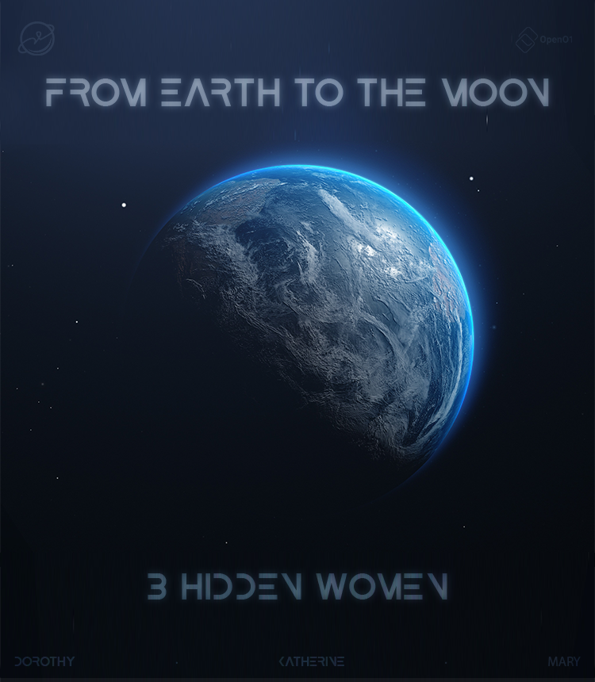

In the 20th century happened a major event for the humanity : The human landing on the moon. While they were making history, some were forgotten.
Indeed, it's in fact three women who led to the success of the mission, they were left behind, hidden from the public. They are Mary Jackson, Dorothy Johnson and Katherine Johnson.
Gowever, they were important and to this day, considered as heroes even with the segregation due to their skin colour